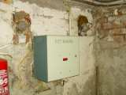
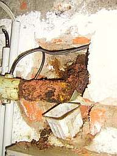
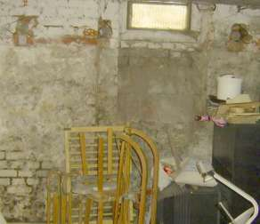
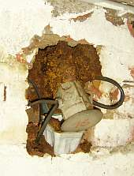
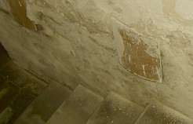

Allerlei dubiose Bauverfahren kommen so als sogenannte Abdichtungssysteme / Trockenlegungssysteme zur
angeblichen Mauerentfeuchtung / Mauertrockenlegung zum Einsatz. Der arglose Bauherr, hin und wieder sehr schlecht
vertreten durch ganz und gar ahnungslose Hausverwalter oder Baubeamte, hat's ja! In Bautenschutz+Bausanierung Heft
7/01 schreiben die Autoren Dipl.-Chem. A. Detmann, Prof. Dr. rer. nat. habil. H. Venzmer, Dipl.-Phys. C.-M. Moewe und
Dipl.-Phys. O. Bakhramov, alle Dahlberg-Institut Wismar, unter "Feuchteschutz, Die technische Gretchenfrage, Sind
elektroosmotische Trockenlegungsverfahren anwendbar?" nach entsprechender Forschung auf S. 57 als Schlussfolgerung
zu marktgängigen Methoden: "dass elektroosmotische Verfahren, die nur mit minimalen Spannungen und großen
Elektrodenabständen arbeiten, keine brauchbaren Ergebnisse erzielen können." In den Testreihen war
nämlich klar geworden, daß mit den Verfahren (Elektro-Osmose) keine nennenswerten Wassertransporte durch die
bauwerkstypischen Kapillarsysteme zu erzielen sind.
Nach den einschlägigen Werbeaussagen für die Osmoseverfahren sollen die Mauern und Wände bzw. das nasse
Mauerwerk elektronisch positiv gepolt werden, das umgebende oder am Fundament vorhandene Erdreich soll dann den
negativen Pol geben. Wird nun eine Spannung zwischen dem Mauerwerk als Pluspol und dem Fundament als Minuspol angelegt,
soll es bestimmungsgemäß zu einem Wassertransport in Richtung negativ geladenes Fundament kommen. Professor
Ferdinand Friedrich von Reuß (18.2.1788 Tübingen - 14.4.1852 Stuttgart), war einst (1806 ff.) als Professor
der Chemie in St. Petersburg bei Versuchen mit nassem Lehm darauf gekommen, daß Wasser in feinporösen
Materialien sich bei Anlegen einer elektrischen Spannung "in der Richtung des positiven Stromes" bewegt und dabei auch
eine poröse Wand durchdringen kann. Reuß nannte die Bewegung bzw. den Vorgang der Elektroosmose
(Elektrotransfusion) "Motus stoechiagogus" (vgl. "Notice sur un nouvel effet de l’électricité galvanique", Mem. de la
societé Imp. des Naturalistes de Moscou. Tom. II, 1809), nach dem späteren (1827) Entdecker Porret dem
Jüngeren wird der elektroosmotische Wassertransport in der Fachliteratur aber eher "Porret'sches Phänomen"
genannt.
Aha. Im Labor und Lehm als "Phänomen" bewiesen, seit 1806 russisches Wissen, gar später für bauliche
Zwecke adaptiert, patentiert oder mit Gebrauchsmusterschutz veredelt, Referenzen von zufriedenen öffentlichen und
privaten - gar kirchlichen (glauben die denn alles?) Kundschaften, manchmal sogar wissenschaftlichen Instituten aus
Hochschulen und/oder dem privaten Gewinnstreben von Professoren und Doktoren verpflichtet, zuhauf.
Und was ist dann, wenn der erste Zentimeter in der Wand so trocken wäre, daß kein Strom mehr fließt?
Und was, wenn die trotz aller feuchteexorzistischer Nässeaustreibung zwangsläufig im Baustoff als Rückstand verbleibenden verbleibenden Mauerwerkssalze weiter
hygroskopisch Feuchte einlagern, Polarisierung hin oder her? Oder, oder, oder?
Den für die Feuchtemessung an feuchten Bauteilen maßgeblichen Einfluß von Außenklima und Raumklima machen sich bestimmte Anbieter der "Trockenlegerbranche"
nutzbar und gehen zur Überzeugung des zweifelnden Kunden wie folgt vor:
Einbau des Trockenlegungs-Systems bzw. begleitende oder vorbereitende erste Feuchtemessung (Verfahren durch elektrische
Widerstandsmessung, die freilich gar keine Feuchtemessung im Sinne des Wortes ist, CM-Methode oder Darrprobe an
entnommenem Material egal) bei sommerlich hoher Außentemperatur und niedriger Raumtemperatur - also hohem
Kondensataufkommen / Kondensatniederschlag / hoher Wasseraufnahme aus Luftfeuchte an den "trockenzulegenden" Baustoffen.
Trockenlegungs-Bestätigungsmessung als Wirkungsnachweis dann bei niedrigen herbstwinterlichen
Außentemperaturen mit extrem niedrigem absolutem Feuchtegehalt und keinerlei Kondensatwirkung an demgegenüber
wärmeren Bauteiloberflächen. So kann man bei grundsätzlich unveränderten Feuchte- und
Salzverhältnissen an Bauteilen Oberflächenmeßwerte der angeblichen Feuchtegehalte nach Wunsch
produzieren, auch wenn alles mufffelt, schimmelt und die Brühe im nächsten Sommer wieder von der Wand fließt.
Noch raffinierter dann manipulative Methoden bei der Entnahme von Bohrproben/Bohrkernentnahme: Je nach Bohrgerät und Bohrmethode (Ansetzen des Bohrers,
Geschwindigkeit des Bohrvorgangs, Drehzahl beim Bohren) entzieht das Bohren selbst dem entnommenen Material mehr oder weniger Wasser / Feuchtigkeit, das Bohren
eben dank Reibung trocknende Hitze erzeugt. Auch so kann der geschulte Trockenlegungsexperte Feuchtegehalte nach eigenem Wunsch garantieren. Der Gelackmeierte
dabei ist immer der leichtgläubige Kunde.
Andere Anbieter wollen mit sog. Tesla-Wellen die Kapillaritätwirkung gleich ganz und gar verhindern, indem sie
vorgeben, die Oberflächenspannung des Wassers im Mauerwerk zu verkleinern. Worauf dann die Wassertropfen in den
Kapillaren immer kleiner werden sollen und - welch unglaubliches Pech für sie - durch die Kapillare dann ins
Erdreich zurücktropfen bzw. herunterplumpsen. Ein Schelm, wer Böses dabei denkt! Denn die Erklärung, wie
es die vermaledeiten Tröpflein jemals schaffen konnten, den unendlichen Kapillarwiderstand zwischen den Kleinporen
im Stein und den Großporen im Mörtel jemals zu überwinden, fehlt bisher.
Schön blöd also, wer auf sinnlose Maßnahmen gegen nicht aufsteigende Feuchte im Mauerwerk schon hereingefallen ist. Noch
blöder, wer künftig darauf hereinfällt. Und was die oft als Marketing-Waffe eingesetzte Geld-zurück-Garantie
dann wirklich beanspruchen will, dem empfehle ich, dafür ein paar Referenzen einzuholen. Und sich etwas umzutun,
wie es den Verblödeten ging, die darauf hereingefallen sind. Keine Freude soll gerade heutzutage ja schöner sein, als echte Schadensfreude ...

.
.
.
.
Das gilt freilich auch für viele Kunden von Mauerwerkstrockenlegern mittels außen Aufgraben, Drainieren, Isolieren, Dichten, Dämmen und innen die
Unwirksamkeit bzw. das Totalversagen der Entfeuchtungsmethode kaschieren durch allersinnlosestes, aber superteures
Sanierputzen mit Sanierputz gem. WTA-Richtlinie, obwohl es nur um etwas Salzausblühung / Mauersalpeter an kalten Sockeln in Kellern,
Kirchen, Kathedralen und Kapellen, Burgen und Schlössern, im Bauernhaus und Bürgerhaus geht, das mit Entfernen des defekten und simpelstem Entsalzen des
versalzten Putzes und Reparatur in Kalktechnik in den Griff zu bekommen wäre.
Eine Temperierung der versalzten Feuchtzonen ist zwar auch ein inzwischen gängiges Mittel, hat jedoch den Nachteil, daß die
Sockelbeheizung im Dauerbetrieb laufen müßte, um neuerliche Anlagerung von Feuchte am Mauersalpeter - ab ca. 50 % relativer Luftfeuchte - auch sicher zu
vermeiden. Das heißt, daß ausgerechnet im Sommer viel geheizt werden muß, denn die sommerlich hohe Luftfeuchte am kühlen Sockel bringt den
höchsten Feuchteeintrag. Doller als mit "wissenschaftlich anerkannten", "elektronischen", "heiztechnischen" und "elektrophysikalischen" Trockenlegungsverfahren
/ Verfahren zur Mauertrockenlegung kann man im Fall der in Mauerwerkssystemen niemals gegebenen "aufsteigenden Feuchte" sein Geld ja nicht verbuddeln und
wegputzen. Wobei die "alternativen Mauertrockenlegungsverfahren" ohne Gespritze, Verpresse, Gesäge und Geramme, Geschlitze und Rohreingeziehe zugegebenermaßen
für den Geldbeutel und das Bauwerk noch am wenigsten schädigend sind. Hilft's auch nix, schadet's dem Bau vergleichsweise wenig. Aus denkmalpflegerischer Sicht
also wenn auch nicht zu begrüßen, dann doch deutlich weniger schädigend als die "Klassischen Verfahren zur Mauertrockenlegung". Gleichwohl - auch dat
Elektroosmose-Verfahren und seine Zauberkäschen-Verwandten kosten!
Ach, könnte man nur all diese Geldbeutel-Trockenleger und Gewinnmargen-Sanierer trockenlegen, was wäre allein an Steuergeld eingespart!
Daß der Private sein Geld versenkt, sei's drum! Jeder ist doch seines Glückes Schmied. Und wer zu viel Taler im Strumpf hat, soll sie doch gerne zur
Wirtschaftsförderung rauskramen. Auch der neue Lamborghini des Geldbeutel-Trockenlegers kurbelt die Wirtschaft an. Immer noch netter, als neue Panzer in
deutsche Angriffskriege mit dem eigenen Steuergroschen finanzieren, oder?
Wenn's dann wieder mal nicht geklappt hat:
Die bekanntesten Ausreden der Trockenlegungs-Scharlatane
(nach Edmund Bromm, leicht ergänzt
"Sie hatten einen Wasserschaden!
Sie lüften falsch!
Eine Leitung ist undicht!
Wasser drückt von unten ein!
Die Bodenplatte muß einen Riß haben!
Wasser drückt als Stauwasser ein!
Der Verputz ist schadhaft!
Der Verputz hat zu viel Salze!
Im Mauerwerk sind zu viele Salze!
Es entsteht Tauwasser, weil der Raum falsch genutzt wird!
Es entsteht Tauwasser, weil feuchte Sommerluft in den Raum kam!
Die Heizung hatte einen Defekt!
Ihr Wäschetrockner gibt zu feuchte Abluft ab!
Der Überlauf hat nicht funktioniert!
Das Grundwasser ist angestiegen!
Das Wasser kommt durch den Kamin, weil keine Abdeckung vorhanden ist!
Eine Setzung am Haus hat zu einem Riss geführt!
Das Gerät muß 30-50 Jahre betrieben werden, das dauert!
Bei Ihnen liegt besonders viel Feuchte vor, da kann sich der Erfolg nicht so schnell zeigen!
Usw., usf."
Da keinesfalls gesichert ist, daß alle ö.b.u.v. Sachverständigen ausreichend Ahnung von den Ursachen und Wirkungen der Feuchte im Bau haben - es soll sogar nicht nur nach mir vorliegenden "Sachverständigen-Gutachten" aus Beweissicherungsverfahren welche geben, die selbst an die "aufsteigende Feuchte" glauben und vollkommene falsche Maßnahmen empfehlen - ist ein Gerichtsgang nach Trockenlegungsbereinfall durch den geschädigten Bauherrn eine mehr als zweifelhafte Sache. Eine Krähe (Schwachverständiger Schlechtachter) hackt einer anderen (Trockenlegungsbescheißer) eben kein Auge aus.